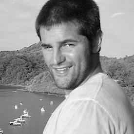

Live Like Teddy
This website was designed by the Sude Shop and is dedicated to the life of Teddy Waterman.
Teddy was unusual. And by that I mean he was extraordinary.
He was blessed with a last name that encapsulated his most sentient quality – love of the water. He was endowed with remarkable physical beauty and not an ounce of vanity.
Teddy walked courageously through dark places. It wasn’t always easy for him to find the light, but he determinedly sought it and found it in his family, his beloved Claire, his surfing and fishing buddies, his students and colleagues, and most of all, in the waters of Galveston Bay and the world’s oceans.
Teddy told my mother, his grandmother Bettye Carpenter, that he was most at peace on the water, that when he was surfing or tooling around the bay in his boat, all the chatter in his head disappeared and he was at one with the universe. It was his meditation; his prayer.
From his early childhood, Teddy was one of the most complex creatures I’ve ever known. As a toddler, he had the sculpted upper body of a welterweight boxer. He knew no fear of physical challenges, then or ever, and he had the scars to prove it. His impulsiveness was legend at a tender age.
He was utterly serious and committed in all his endeavors, so serious that some people didn’t understand him and missed out on getting to know him. They didn’t understand his fierceness. But those of us who loved him and understood him knew that this lion had the soul of a lamb. Teddy grew more complex and fascinating to us the longer we knew him.
He muscled through college with an eye on a career as a teacher. As with every challenge in his life, he faced it directly and worked harder than ten average people to get through. Typically Teddy, he chose a tough route, dedicating himself to teaching children with a wide spectrum of profound physical and mental disabilities. He did it with flair and innovation, with loving kindness, refusing ever to leave a child behind.
Teddy never overlooked anyone in need of a hand.
Buddha taught that the crowning jewel of the heart and mind with which we are born, is the ability to extend love and compassion to others. In that, Teddy excelled. He didn’t always extend his love in the expected hugs and kisses, but in quiet, determined action. He cared deeply for his grandmother, Mama Bettye, checking in with her every day to see if she had everything she needed, and always including his Aunt Kim whose needs grew greater in the past couple years as she aged with Down Syndrome and Alzheimer’s disease.
She asked for Teddy at dinner every night, and likely did for every day until she passed away, keeping his memory alive in her own way.
Teddy was a brilliant study in contrasts: He was fierce and impulsive, but utterly gentle and loyal. While he sometimes struggled to express himself verbally, he communicated so much with his generous gift of himself, through the thoughtful things he did for each of us. Teddy loved the swirling canvases of Vincent Van Gogh, and the death metal band Slayer.
He was an immovable object with deep roots in the sandy soils of Galveston Island where he was born and where he lived all his life. He was born of water, and his life ended in the water – his source of contentment, his solace, his grave.
I don’t know what I believe about rebirth, but I do believe that the spirit of the departed lives on in the lives of others and is dispersed into the universe. When I imagine Teddy’s death, I picture him catching his last wave on a glorious California afternoon, releasing his last breath, and like light, becoming both particle and wave, one with the sea.
We will miss him and we will never forget him.
By Kathryn Eastburn, March 2007